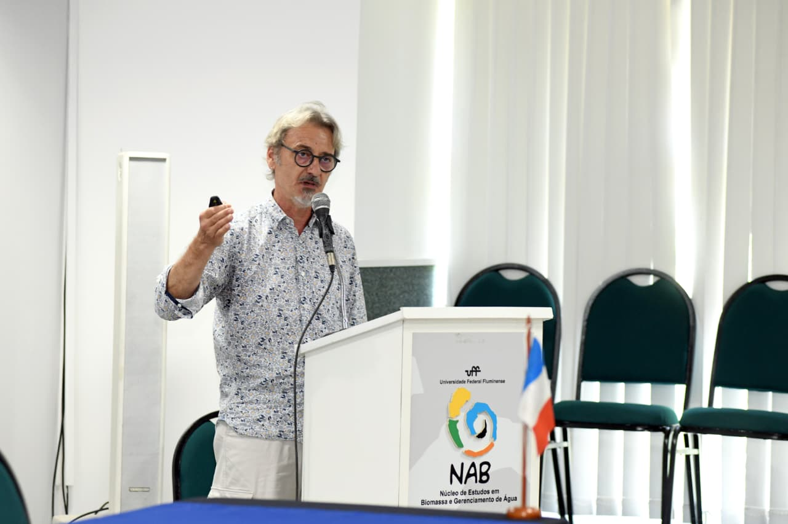
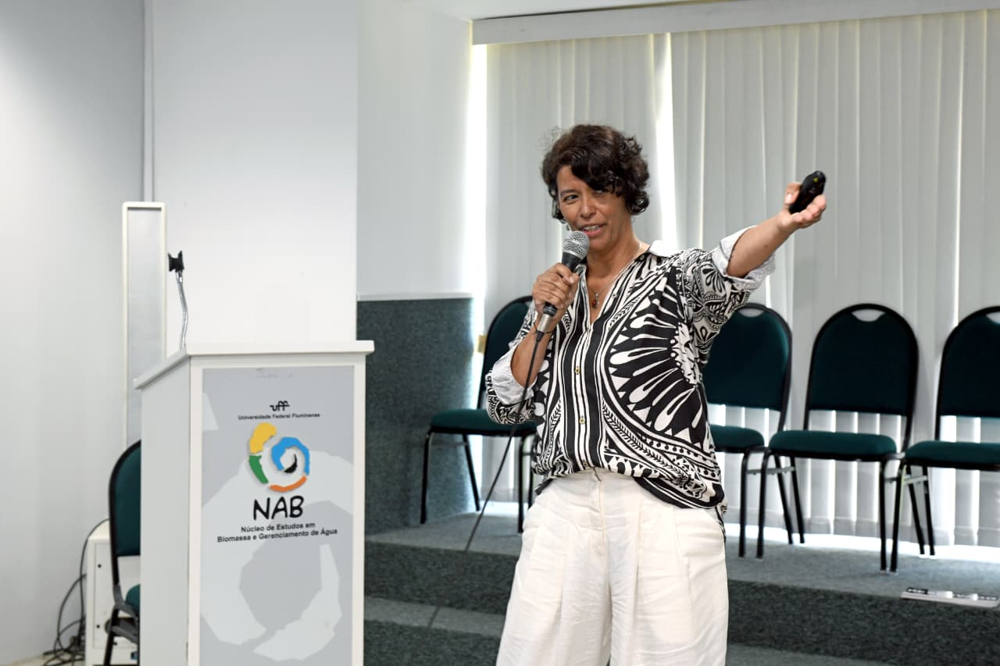
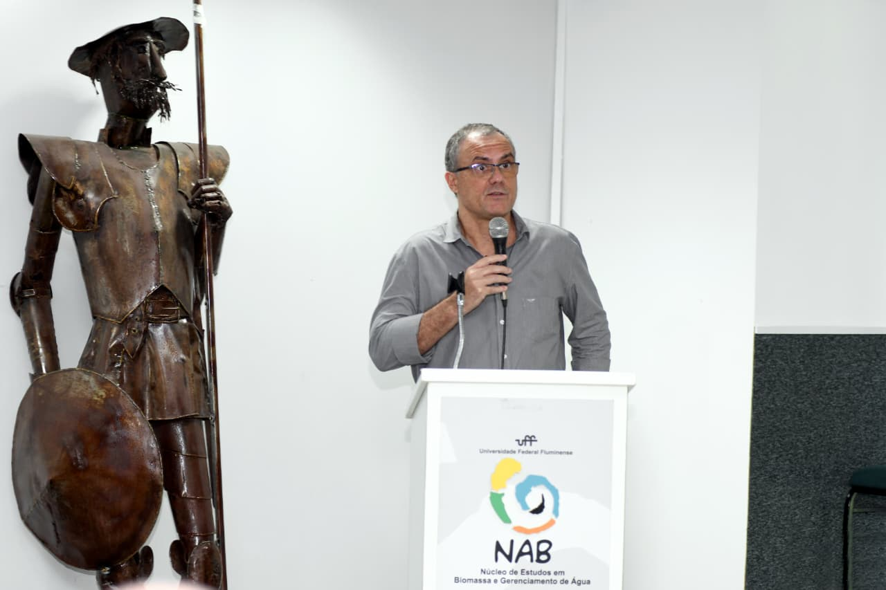
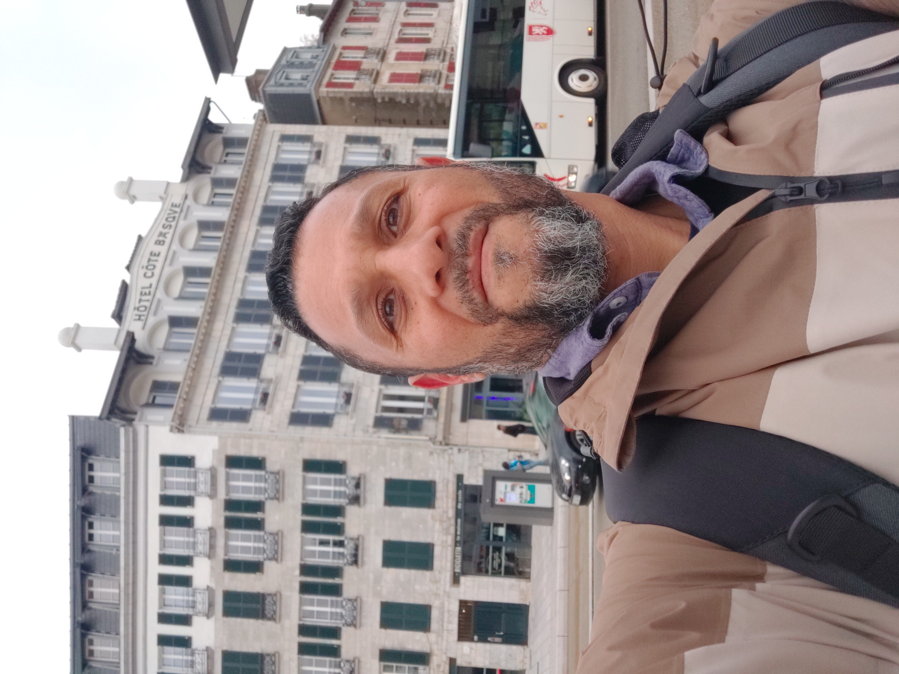

Permanent members

Dr. Gwenaël Abril
Director
CNRS
Biogeochemical cycles · Ecosystem metabolism · Organic matter · Functional ecology

Prof. Gleyci Moser
Co-director
UERJ
Phytoplankton ecology · Harmful algal blooms · Biological communities (Theme 3)

Prof. Marcelo Bernardes
Co-director
UFF
Organic geochemistry · Carbon dynamics · Coastal ecosystems (Themes 1 & 2)

Prof. Alexandre Fernandes
UERJ
Hydrodynamics · Numerical modeling · Coastal circulation